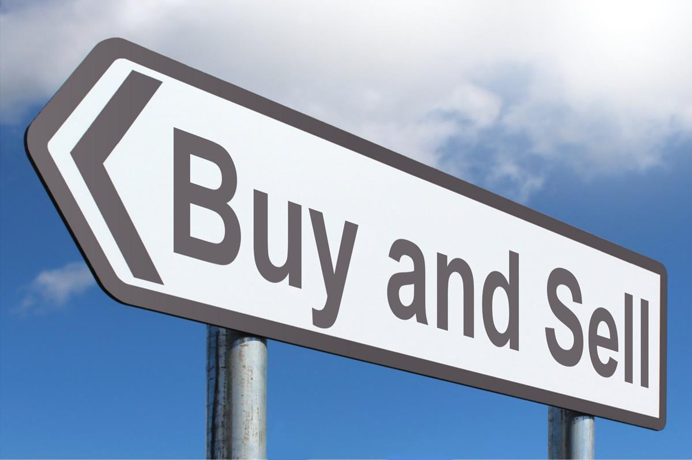

Stock Market
Wealth is relative. Many live their dreams by having minimal monetary assets. They might consider wealth in the intangibles: free time, clean air, free from stress, free from violence, etc. Unfortunately, many compare their wealth to other people: keeping up with the Joneses. We use our surroundings as a measurement for how successful we are. However, when you use your neighbors as a benchmark for success, you will never appreciate what you have and will stay feeling miserable. Someone having 100 million USD in assets might feel poor if they live among wealthier people. Thus, wealth is, and always will be, a relative issue. In this article, we consider “rich” as having enough to quit your job and live off your investments, although we don't recommend stopping working. We believe having a job is very important, whether you need the pay or not.The first variable to succeed is capital. If you have no capital to invest, you will, of course, not generate wealth. You can generate capital in many ways. You can work and earn more, or you can downsize and save more -or both. When you have invested your capital, you need time to let it compound. Investing in the stock market is one of the world's best ways to generate wealth. One of the major strengths of the stock market is that there are so many ways that you can profit from it. But with great potential reward also comes great risk, especially if you're looking to get rich quick. If you plan to dabble in short-term or aggressive market strategies, bear in mind that you'll be risking the loss of some or even all of your investable funds. Most of the strategies listed below will ultimately prove unprofitable for the average investor. But, if you want to speculate with a small percentage of your portfolio, they may possibly help you generate outsized gains. Always talk with your financial advisor before you embark on any new, aggressive stock market strategy.If you're a nimble and proficient trader, probably the "easiest" way to make fast money in the stock market is to become a day trader. A day trader moves in and out of a stock rapidly within a single day, sometimes making multiple transactions in the same security on the same day. For investors with a good understanding of market trends and the ability to anticipate or decipher financial results of particular companies, money can be made in day trading. However, the average day trading investor typically loses money. In fact, anecdotal estimates suggest up to 95% of day traders lose money -- and, even worse, they continue day trading. There is definitely money to be made as a day trader, but generally it's best left to the professionals.A short seller essentially bets that a stock's price will fall. Technically, a short seller borrows shares of stock, sells them, then buys them back and returns them to the lender. If the stock price has fallen in between these two transactions, the short seller turns a profit. But if the stock instead rises, then the short seller loses. In many ways, short selling is like day trading, meaning it's a quite aggressive strategy. As the long-term trend of the market is strongly up, a short seller must have a compelling reason for believing that a specific stock or index will fall. Macroeconomic factors, an overvalued stock price or a deteriorating business are all reasons that might cause a stock to fall, but they are not guarantees. In a booming market, even stocks that are "overvalued" or unprofitable may continue to rise. Like day trading, short selling can be profitable, but it takes a very astute or professional trader to do so.Although names like Apple and Microsoft dominate the financial news, there are plenty of stocks that the average investor likely has never heard of that offer vastly greater opportunities for profit -- and loss. Over-the-counter stocks, for example, don't trade on a public exchange and often sell for pennies per share. While many of these companies end up going bankrupt, they also offer speculators the chance to double their money in short order based on rumor and innuendo. Be aware that there is plenty of hype and outright fraud in the OTC markets, however, as they are full of touts that will pump up the price of a stock so they can sell out themselves before the prices crash.The main reason the stock market has been such a tremendous wealth generator is the effect of compound interest. While you can make short-term profits in the stock market, it's actually a safer bet to leave your money in the market for the long term and let compound interest do its magic. For starters, the longer you leave your money in the market, the less risk you actually take. While no one can predict what the market will do from year to year, the S&P 500 index has actually never lost money over any 20-year rolling period. That's an amazing statistic when you think about how volatile the market can be over the short run. If you can keep your money in the market for 10, 20 or even 30 years, your potential to build wealth is tremendous. Think about it this way: If you put $10,000 in the market and earn 10% per year, taking out your profits each year, you'll have a net profit of $30,000 after 30 years, or three times your money. But if you instead let that money compound every year at 10%, you'll end up with just under $200,000, or 20 times your money. This may not be the answer that those looking for a quick buck want to hear, but the best, safest way to generate real wealth in the stock market is to stay in it.
If you're interested in Stock Market , complete our courses on Stock Market
Inventions
Inventing is not only for the old gen. Inventions are the key to the future.In the middle of the 19th century, one forgotten capitalist, William Painter got rich by inventing the disposable cork-lined screw top bottle cap. He passed on his “disposable” secret of success to a young tradesman named King Gillette. Gillette didn't value the advice at first. Gillette supposedly said, “It is easy to give that kind of advice, but how many things are like corks…?” Then Gillette while shaving was intrigued with an idea using that concept. Could he come up with a variant that was better than the then commonly used “straight razor?” The existing product could be endlessly sharpened. Did it last a lifetime? However, it was not very safe. He started in 1895 with a few thousand dollars of his savings. He made a prototype of a razor designed to be cheap enough to be thrown away. The biggest selling points were - greater safety and the time customers would save “honing and stropping.” Several years later, his homemade products were too expensive and he was seriously in debt. He had gained a reputation for foolishness. Like Henry Ford, the bike shop owner who wanted to build the cheap car, he was greeted by colleagues with sniggers, “How's your invention coming?” Gillette persisted. And eventually, by 1901, he had perfected what he was looking for - the first disposable “Safety Razor.” It had a two-sided steel blade. Gillette found a backer for his new invention. This is easy to do today. A $150,000 angel investor bought half of his new company. The first factory opened. He gave away the chrome handle that held his blades with the first package of Gillette disposable razor blades. People tried it and recommended it to friends. He wrote to his wife. “Our fortune is made.” Gillette one of the most successful inventors in American history and he became a very rich man. It took another 75 years until someone like you improved upon his product. A Frenchman named Marcel Bich in recent years took over much of the Gillette mass market with improved “disposable double blade BIC razors.” Triple and quad blades soon followed. The same man also invented and marketed cheap disposable BIC ball point pens and BIC lighters. Remember this! Any product can and will be eventually displaced by a new and /or improved models. Before electric lights were common and there were only candles and whale oil lanterns, John D. Rockefeller used the same basic idea. He made his first fortune with a cheap “Kerosene Lamp.” Rockefeller had acquired a few oil wells in a deal. There was no market then for black crude oil which burned but didn't smell good. So he gave away simple glass lamps for indoor use: “Free with the first purchase of a tin of “Standard Oil.” Poorer people, who couldn't afford beeswax candles didn't mind the smell or the smoke. The early smoky and foul-smelling crude oil fuel improved quickly with new refining techniques. Then came Kerosine Stoves for cooking. He made serious money on Standard Oil kerosene sold by vendors pushing around “wheel barrels” of his oil in China. The invention of the mass-produced automobile by Henry Ford created a new market for “Standard Oil.” The Standard Oil gas stations came next… The most recent product I know of in this category is the Nespresso coffee capsule. What will your idea be? What product or service do you use now that can profit from the techniques of Gillette, Rockefeller & BIC. You don't have to be an inventor. You will need a regular job to support yourself at first, but if you can come up with a product that uses your refills or replacements. Nowadays, disposable goods are the norm. China itself has become rich producing disposable items. We have disposable everything: cutlery, cigarette lighters, and diapers. There's a whole range of products that are so cheap and flimsy that they are also disposable. Think sunglasses and umbrellas and everything you buy at the Two Euro or Dollar stores. But you will come up with something new or a variation. Or, if you don''t invent it you will spot it before it is too popular You will find it and help market it.
If you're interested in Inventions , complete our courses on Inventions
Buy and Sell
This is method is also referred to as 'flipping'. It's probably the most commonly known way of making money. In fact, all retail stores are essentially flipping. They buy products from a wholesaler or manufacturer, and they make a profit when they re-sell the products to us (the consumer) at a marked-up price. Fortunately, you don't have to be a colossal retailer to flip products. There a lot's of things you can buy and re-sell from home. Here are some interesting things to buy that will make you money.Selling Artwork isn't a get rich quick idea. It requires knowledge, time, and possibly a significant amount of capital to invest upfront. None the less I've decided to include this on the list because I know that artwork can be an extremely lucrative flipping option. Collectors and other investors are prepared to spend A LOT of money to get hold of original and rare artwork.the rarer famous artwork becomes, the more the value of it will also grow. The personal story and historical events of the artist will also have a significant impact on the value of the artwork.people buy and sell websites. There are thousands of already built sites that the owner just doesn't want anymore. The idea is to give the site a makeover, add more up-to-date content, and try to get more traffic onto the site. If you can do that, you'll be able to sell that website for a lot more than what you purchased it for. If you're good with computers, SEO, and HTML; or, you're willing to invest some time to learn, flipping websites could be a highly profitable option for you. If you've ever tried to buy a domain name before, there's a good chance the name you wanted was unavailable. That's because most of the good names are already taken! If you're lucky enough to own a golden domain name (for example dogtraining.com), the chances are someone is prepared to pay a lot of money to buy it from you. Hence why I call it a 'golden domain'. You can make a lot of money buying and selling Instagram accounts and here's why… Would you like 50,000 followers on one of the world's largest social platforms? Just imagine how valuable that could be for a business or individual. Most companies have no clue how to grow an Instagram following, and some are willing to pay generously for accounts that do. Tactic #1 Do you know how to grow an Instagram account? Or, are you at least willing to learn how to? If so, you could build new Instagram profiles into accounts with 30,000+ followers. Then find a buyer, sell it, and repeat the process. Tactic #2 Buy Instagram accounts that already have a decent following. Remember to negotiate the best price possible. Then, sell it on to someone who is willing to pay more. You won't make as much profit as the first tactic, but the flip is a lot faster and requires a lot less work.
If you're interested in Buy and Sell , complete our courses on Buy and Sell